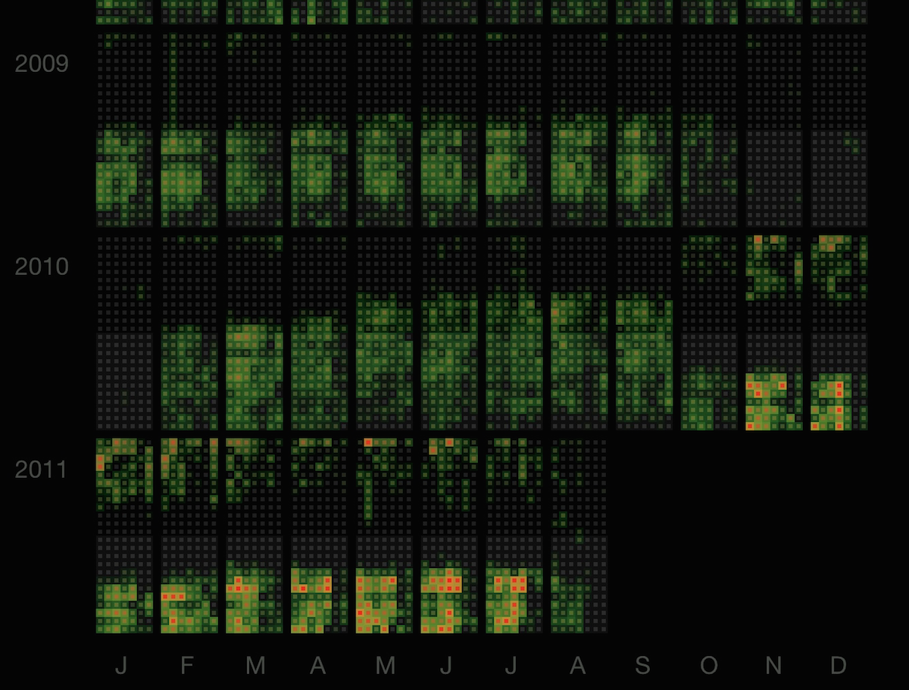
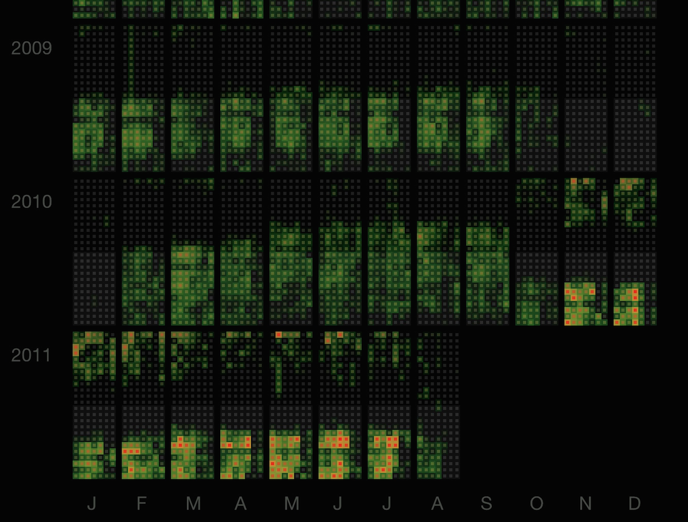

Hallo. I am Martin Dittus. @dekstop on Twitter.
I'm a PhD student in computer science at the ICRI Cities at University College London. I am currently researching community engagement for the Humanitarian OpenStreetMap Team (HOT), a volunteer initiative with thousands of contributors. At its core this is quantitative work, and my main outputs are statistics and data visualisations. In my work I make use of the "hard" evidence of contributor data traces, but also the "soft" evidence of knowing the practices and motivations of the community. I spend a lot of time with the HOT community, am a contributor myself, and have spent much of the last decade with a range of similar community organisations.
I have previously been a software developer and project manager at Last.fm, a director and trustee of the London Hackspace, an organiser for Hack the Barbican and the Electromagnetic Field camping festival, a cat herder for Air Quality Egg contributors, and more. My data visualisations have been featured in Infosthetics [1][2], Visual Complexity [3][4], FlowingData [5], in print magazine De:Bug [6], Manuel Lima’s Visual Complexity book [7], the German-language Visual Simplexity book [8], and elsewhere.
Featured work
 Collective Sensor Networks

Last.fm Heatmap Calendars
Collective Sensor Networks

Last.fm Heatmap Calendars
Featured talks
Other activities
-
Open data sets collected by "everyone"
A talk at Innovation Week Rome on the topic of community knowledge: data and information collected by community groups. During this event 300 people, 30 facilitators, and 10 international speakers were co-creating ideas for a social innovation city. Slides
-
A practitioner’s perspective on urban data work
A talk at Urban Data Hack about my data visualisation and data analysis work in the context of urban spaces, including work by colleagues at the ICRI Cities. Closes with comments on technology-based solutions to social problems, and some suggestions on how best to start looking for important problems. Slides.
-
Open hardware projects at the London Hackspace
A talk for Design Culture Salon at the Victoria & Albert Museum in London, the world's leading museum of art and design. Part of a panel on transparent design with Jessi Baker, Alison Powell, Gillian Youngs, and Kevin Walker. What are the ethics and politics of transparency, and is this is being adequately factored into design practice? Slides.
-
OpenStreetMap community diversity
An article for State of the Map, the annual gathering of the global OpenStreetMap community. Maps have a peculiar ability to act as a stage for shared concerns, as catalysts and connectors for a wide range of interests.
-
The politics of making
A panel discussion at the Elephant & Castle Mini Maker Faire with Cory Doctorow, Sarah Corbet, Eva Verhoeven, and Nelly Trakidou. Can maker culture be understood as political act, as resistance against late capitalism? Slides, video.
-
Creative community spaces
A talk at Bartlett Plexus about the London Hackspace, the Electromagnetic Field camping festival, and Hack the Barbican as community-created spaces. Slides, video.
-
A sensor commons: DIY environmental monitoring
A talk at the Electromagnetic Field camping festival, reviewing a range of global DIY environmental monitoring activities. The Air Quality Egg, SafeCast, DIY spectrometry, and more. Slides.
-
Last.fm heatmap calendars
Visualising the music listening habits of selected Last.fm users. In total the project involved the aggregation of 8.7 million scrobbles across ~180 graphs. Project page, blog post.
-
Music Feeds
A now defunct music blog aggregator, built at the first ever music hack day in London. You could filter posts with Last.fm user profiles, a fulltext search, and more. The results were great: pop culture snippets, opinionated commentary, podcast feeds, and lots of noise. Blog post.
-
Lots of data, little money. A Last.fm perspective
What to do when the data you have to analyse keeps growing but your budget doesn't? A discussion of how Last.fm became one of the first commercial adopters of Hadoop, and one of the biggest users of commodity distributed systems. Slides, video.
-
Pool Radio
A now defunct aggregator of hopefully interesting Last.fm radio stations, aggregated from user tag feeds, group forums, global tag charts, and more. Blog post.
- … and more.